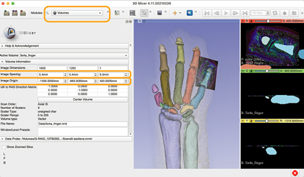

Correlation of 2D and 3D images/3D像に切片位置を示す
This is the unique feature of CoMBI: the correlation between 3D data and 2D data. I' ll introduce two methods: one to show the position of section as a solid plane in the 3D image, and the other to place the micrograph itself into the 3D image.
これぞCoMBIならではのワザで、3Dデータと2Dデータの相関です。べた塗り平面で切片位置を示す方法と、顕微鏡写真そのものを3D画像内に配置する方法を紹介します。使用するアプリは、3D slicerです。
Showing the section position as a flat plane/切片位置を平面で示す
- (Explore_win, Finder_mac) Duplicate a color serial block-face image or a grayscale serial block-face image.
- Delete the block-face image corresponding to the section, and create a new image in its place.
- For a color image series, the new image will be filled with prefered color.
- For a gray image series (black background), the image will be either pure white or 50% gray. Which one is better depends on the settings for volume rendering.
- Load the image into a 3D viewer (3D slicer or Horos).
- Use the color image series for MPR, and the grayscale image series for volume rendering.
- フォルダ操作で、カラー連続画像、まはた、グレースケール連続画像を複製する。
- 切片に対応したブロック面画像を削除し、代わりに新規画像をつくる。
- 新規画像は、カラー連続画像の場合、このみの色、一色でべた塗りします。MPRの画像のなかで、切片位置が線として表示されます。
- グレー連続画像（黒背景）の場合、真っ白か、50%グレーのべた塗り画像、です。どちらがいいかは、Volume Renderingのときの表示条件によります。
- 3Dビューワ（3D slicerまたはHoros）に読み込む。
- カラー連続画像はMPR用、グレースケール連続画像はボリュームレンダリング用に使用する。
Placing a microscope image into a 3D iamge/顕微鏡画像を3D画像内に配置する
- Load serial images into 3D slicer.
- Load microscopic imaga, also. Caliculate pixel size and check the position among serial images.
- Go to Module
Volume. - For setting serial image,
Volume>Active Volume> select serial image, andVolume Information>Image Spacing> input voxel size. - For setting microscopic image,
Volume>Active Volume> select microscopic image, andVolume Information>Image Spacing> input pixel size, andImage Origin> input Z positon at first according to the position among serial images. The value to be input can be caliculated as distance from the first plane. Then, adjust XY position manually, referring block-face image, reconstructed plane, volume rendered image and microscopic image.

There are 3 kinds of data; grayscale serial images, segmentation data, and microscopic data. This data was used in Sci Rep 2021, Fig.5
- 3D sclicerに連続画像をとりこみます。
- 顕微鏡画像も取り込みます。前もって、ピクセルサイズを計算しておき、採取した場所（対応するブロック面の位置）のメモを用意します。
- モジュール
Volumeへ。 - 連続画像の設定は、
Volume>Active Volume> 連続画像データをえらんでVolume Information>Image Spacing> ボクセルサイズを入力。（ピクセルサイズと切削厚） - 顕微鏡写真の設定は、
Volume>Active Volume> 顕微鏡画像データをえらんで、Volume Information>Image Spacing> ピクセルサイズを入力します。Image Origin> まずは、Z位置を入力します。採取した場所の記録から、端から何マイクロかを計算します。つぎに、XY位置を手入力で調節します。対応するブロック面や再構築像、顕微鏡像を相互に比べながら調節します。